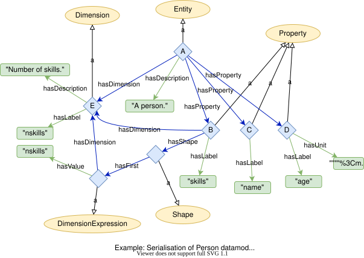
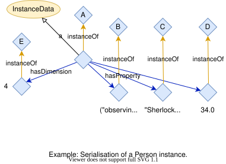

Serialisation of datamodels and instances in RDF#
This document tries to illustrate how the datamodel ontology can be used via a simple example.
Serialisation of an Entity#
Lets start with a simple entity for a person as example that in json, would look like:
{
"uri": "http://onto-ns.com/meta/0.1/Person",
"description": "A person.",
"dimensions": {
"N": "Number of skills."
},
"properties": {
"name": {
"type": "string",
"description": "Full name."
},
"age": {
"type": "float",
"unit": "years",
"description": "Age of person."
},
"skills": {
"type": "string",
"dims": ["N"],
"description": "List of skills."
}
}
}
Figure 1 shows how it would look like serialised in RDF,

where the individuals labeled A, …, E are shorthands for the following IRIs:
shorthand |
IRI |
|---|---|
A |
|
B |
|
C |
|
D |
|
E |
Hence http://onto-ns.com/meta/0.1/Person is an individual that stands for the Person entity. The IRIs for the dimensions and properties are constructed by appending a hash and then the corresponding label to the IRI of the entity.
Serialised in turtle the Person entity would look like
@prefix : <https://w3id.org/emmo/domain/datamodel/ex1#> .
@prefix rdf: <http://www.w3.org/1999/02/22-rdf-syntax-ns#> .
@prefix dm: <https://w3id.org/emmo/domain/datamodel#> .
@prefix person: <http://onto-ns.com/meta/0.1/Person#> .
<http://onto-ns.com/meta/0.1/Person> rdf:type dm:Entity ;
dm:hasProperty person:name , person:age , person:skills ;
dm:hasDimension person:nskills ;
dm:hasDescription "A person."@en .
person:name rdf:type dm:Property ;
dm:hasLabel "name"@en .
person:age rdf:type dm:Property ;
dm:hasUnit "year" ;
dm:hasLabel "age"@en .
person:skills rdf:type dm:Property ;
dm:hasDimension person:nskills ;
dm:hasShape :shape1 ;
dm:hasLabel "skills"@en .
person:nskills rdf:type dm:Dimension ;
dm:hasLabel "nskills"@en ;
dm:hasDescription "Number of skills."@en .
:shape1: rdf:type dm:Shape ;
dm:hasFirst :dimexpr1 .
:dimexpr1: rdf:type dm:DimensionExpression ;
dm:hasDimension person:nskills ;
dm:hasValue "nskills" .
Instance#
Lets now consider an instance of a person that in json would look like
{
"315088f2-6ebd-4c53-b825-7a6ae5c9659b": {
"meta": "http://meta.sintef.no/0.1/Person",
"dimensions": {
"N": 4
},
"properties": {
"name": "Sherlock Holmes",
"age": 34.0,
"skills": [
"observing",
"chemistry",
"violin",
"boxing"
]
}
}
}
Figure 2 show how this instance may look like serialised as RDF, where the individuals A, …, E refer to the same individuals as in Figure 1.

Serialised in turtle this instance would be
@prefix : <https://w3id.org/emmo/domain/datamodel/ex1#> .
@prefix rdf: <http://www.w3.org/1999/02/22-rdf-syntax-ns#> .
@prefix xsd: <http://www.w3.org/2001/XMLSchema#> .
@prefix dm: <https://w3id.org/emmo/domain/datamodel#> .
@prefix person: <http://onto-ns.com/meta/0.1/Person#> .
:person1 rdf:type dm:InstanceData ;
dm:hasUUID "315088f2-6ebd-4c53-b825-7a6ae5c9659b"^^xsd:string ;
dm:instanceOf <http://onto-ns.com/meta/0.1/Person> ;
dm:hasDimension :dim1 ;
dm:hasProperty :name1 , :age1 , :skills1 .
:dim1 rdf:type dm:DimensionValue ;
dm:instanceOf person:nskills ;
dm:hasValue "4"^^xsd:integer .
:name1 rdf:type dm:PropertyValue ;
dm:hasValue "Sherlock Holmes"^^xsd:string .
:age1 rdf:type dm:PropertyValue ;
dm:hasValue "34.0"^^xsd:float .
:skills1 rdf:type dm:PropertyValue ;
dm:hasValue (
"observing"^^xsd:string
"chemistry"^^xsd:string
"violin"^^xsd:string
"boxing"^^xsd:string
) .